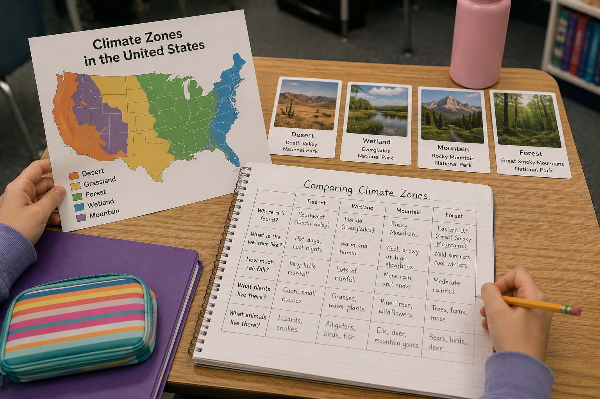
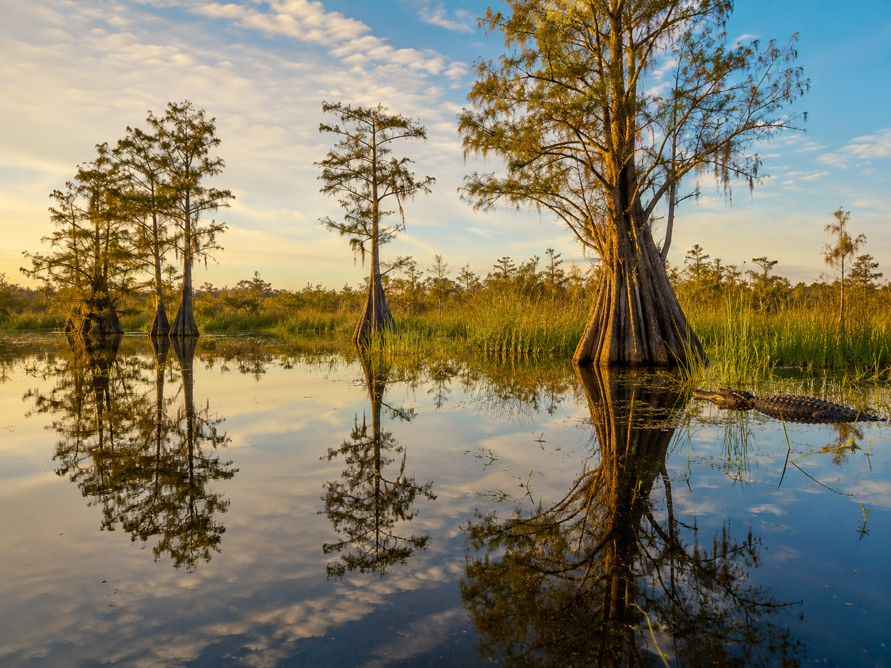
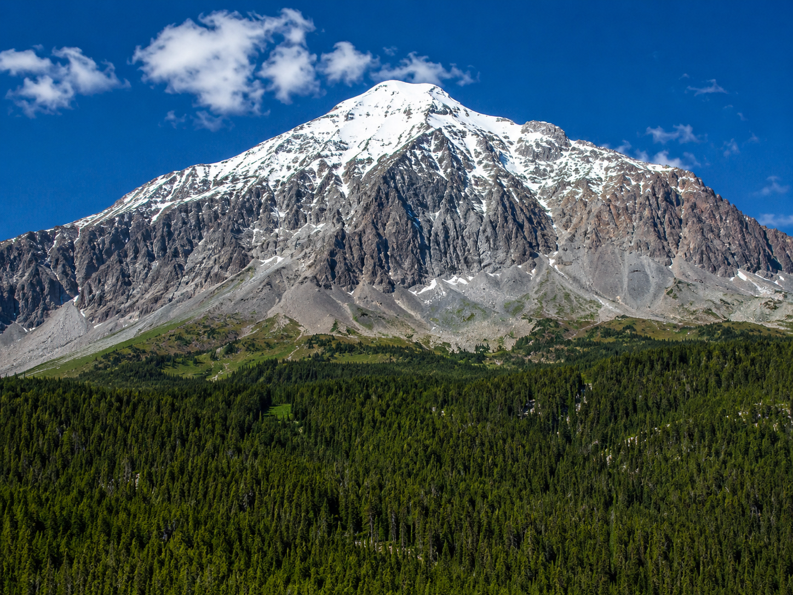

Hold this question in your mind as you work through the lesson. By the end, you should be able to answer it with evidence!
Start here. Learn the words you will use today.
Look at the three scenes in the banner at the top of this page: a desert, a wetland, and a mountain. These are all real landscapes found in national parks across the United States.
Before we learn anything new, just look carefully and notice what you can already see.
There are no wrong observations. Write down whatever you actually notice — colors, plants, water, sky, temperature clues, anything. We'll come back to your question at the end of the lesson.
These are the words scientists use when they study climate and the patterns of weather across different regions. Tap each card to flip it and read the definition. You'll see these words throughout the lesson!
Copy this sentence carefully into your science notebook:
"Climate describes the typical weather conditions of a place measured over many years."
Now learn the main science idea.

You've probably checked the weather before — maybe to decide whether to bring an umbrella or wear a jacket. Weather tells you what's happening right now, or what's expected tomorrow. It changes from day to day and even hour to hour.
ClimateclimateThe typical weather conditions of a place, observed over many years — not just one rainy day. is different. Climate describes the patterns of weather in a place over many, many years. A single rainy afternoon doesn't change a desert's climate. But if it's almost always hot and dry there, year after year — that's a desert climate.
Here's one way to think about it: weather is your mood today, but climate is your personality. Your personality takes years to form and doesn't change because of one bad morning.
The United States contains several distinct climate zonesclimate zoneA large region that shares similar long-term weather patterns, like hot-and-dry or cool-and-rainy.. Three of the most recognizable are deserts, wetlands, and mountains — and they're strikingly different.
🏜 Desert Zones — Hot, Dry, and Extreme
Very little precipitationprecipitationWater that falls from clouds — rain, snow, sleet, or hail., scorching days, and cold nights. Plants store water in thick stems; animals come out after dark. Example: Death Valley National Park, California.
🌴 Wetland Zones — Warm, Wet, and Teeming with Life
WetlandswetlandLand covered by shallow water much of the year, like swamps, marshes, and bogs. stay warm and wet year-round, with soft flooded ground and habitat for hundreds of species. Example: Everglades National Park, Florida.

🏔 Mountain Zones — Cool, Snowy, and Layered
Temperature drops with elevationelevationHow high a place is above sea level. Higher elevation usually means cooler temperatures. — thin air holds less heat. Peaks stay snow-covered even in summer; pine forests grow on the slopes below. Example: Rocky Mountain National Park, Colorado.

All of Earth's climate patterns start with sunlight. The sun's energy heats the land, the water, and the air — and those differences in heating are what drive everything else.
Places closer to the equator receive more direct sunlight. Direct sunlight hits the ground at a more concentrated angle, which means more energy per square meter — and more heat. That's why tropical regions near the equator stay warm and wet year-round.
Places farther from the equator receive sunlight at a shallower angle, which spreads the same amount of energy over a wider area. Less concentrated energy means cooler temperatures — which is why regions farther north or south tend to be cooler.
Sunlight also drives evaporationevaporationWhen liquid water heats up and turns into water vapor — the invisible gas that rises into the air.. Where the sun is intense, water evaporates quickly from the ground and from bodies of water. That water vapor rises, forms clouds, and eventually falls as rain — feeding wetlands and forests. In deserts, there's so little water to begin with that even evaporation happens quickly, leaving the ground dry and cracked.
Climate is the long-term pattern of weather in a place. Different regions receive different amounts of sunlight and precipitation, which creates distinct climate zones — each with its own temperature range, moisture level, and types of living things.
The crosscutting concept here is Patterns: climate zones show consistent, repeating conditions that scientists can measure and use to make predictions.
Curious? Go Deeper
Why does elevation make mountains colder? It comes down to something called the lapse rate — the rate at which air temperature drops as you go higher into the atmosphere. On average, for every 1,000 feet you climb, temperature drops about 3.5°F. So a mountain peak at 14,000 feet could be 49°F colder than a valley at sea level, even on a warm day. That's why the tops of mountains are often snow-covered while the valley below is green and sunny.
Why are deserts so cold at night? Moisture in the air traps heat — think of it as a blanket. Humid places hold warmth after the sun goes down. Deserts have almost no moisture, so heat escapes rapidly. Death Valley can swing from 115°F during the day to below 40°F the same night. The dryness works both ways.
Scientists who study Earth's climate zones are called climatologists. They use weather station data collected over decades to identify patterns — and some of those stations have been recording temperature and rainfall every single day for over 100 years.
Now test the idea yourself.
You'll need: Your science notebook, pencil, and colored pencils. If you have access to the photo cards or a climate zones map like the one shown in the lesson image, get those out too.
In this activity, you'll build a comparison chart for three climate zones. Scientists use charts like this to organize observations and spot patterns — and you're going to do exactly the same thing.
Draw Your Chart: In your science notebook, draw a chart with 5 rows and 4 columns. Label the top row with: Climate Zone, Temperature, Precipitation, Plants & Animals. Label the left column with: Desert, Wetland, Mountain. Leave the rest of the cells blank — you'll fill those in next.
Fill In What You Know: Use what you read in the lesson to fill in the chart. For each climate zone, record: typical temperature range, how much precipitation it gets, and two or three plants or animals that live there.
Add Color: Use colored pencils to color-code each row — yellow for desert, blue for wetland, green for mountain. This is exactly what scientists do when they make climate maps: color makes patterns easier to see at a glance.
Find the Pattern: Look at your finished chart. Write one sentence below the chart that starts: "One pattern I notice across these three climate zones is…" What do you see when you compare them side by side?
Note Your Sources: At the bottom of your chart, write a short note about where your information came from. For example: "I got my desert data from the lesson text in Section 2 and the Everglades data from the photo caption and Section 2." Scientists always keep track of where their evidence comes from.
Think about it: As you look back at what you just did, consider these questions. You don't need to write these down — just think them through carefully.
1. Tell the story of your chart.
Walk through your comparison chart from top to bottom. Which climate zone surprised you the most — and why?
2. The pattern you found.
Write the pattern sentence you completed in Step 4. Then explain: what do you think causes that pattern?
3. Go back to your Notice & Wonder question.
Read the question you wrote at the beginning of this lesson. Can you answer it now? Think about what you know — and what you're still not sure about.
Check what you understand.
Let's see what you've learned. There are 3 questions. Click the answer you think is correct — you'll get immediate feedback after each one. Take your time and think before you click!
Show what you learned.
🔍 Part A — Complete Your Climate Zone Chart
Use your comparison chart from the previous activity. Make sure each row is completely filled in before moving on to Part B.
🚀 Part B — Short Answer
Think about each question. You'll use your best ideas in the Write and Explain section below.
Look at your finished climate comparison chart. Choose the two climate zones that are most different from each other. Explain what you see.
What do you notice?
💡 Start with: "When I compare the ___ zone and the ___ zone, I notice that…"
What does your chart tell you?
💡 Start with: "My chart shows me that the main reason these places are different is…"
Why does that make sense?
💡 Start with: "This makes sense because what I learned about sunlight and precipitation shows…"
📚 Try to use at least one of these words in your answer: climate, precipitation, elevation
🎨 Part C — Draw & Label
In your science notebook, draw two climate zones side by side — one that gets very little precipitation and one that gets a lot. Label at least three features in each drawing: typical temperature, one plant, and one animal that lives there.